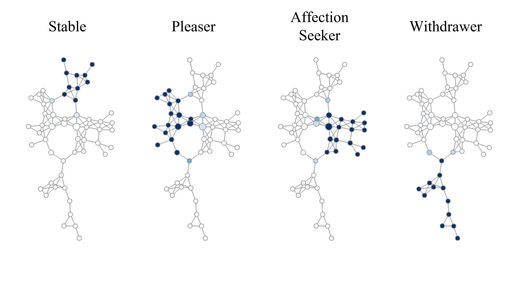
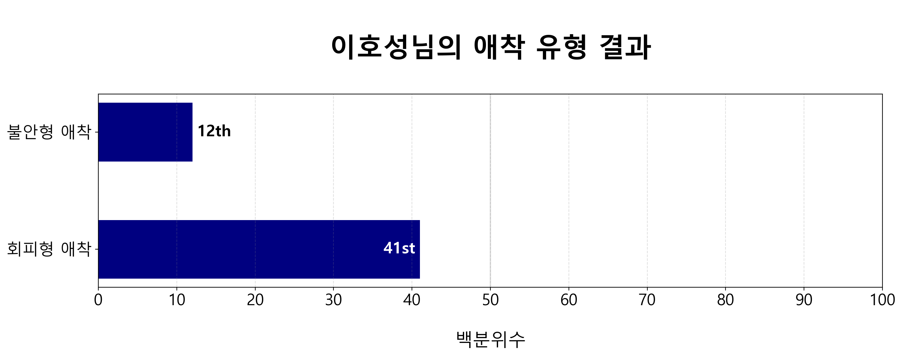
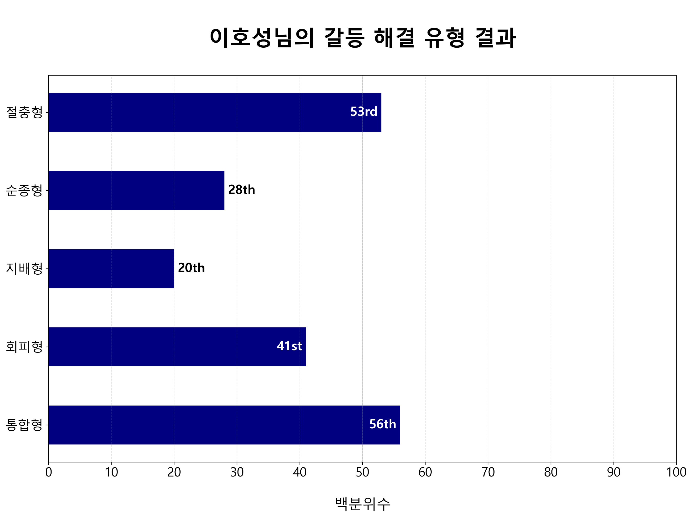
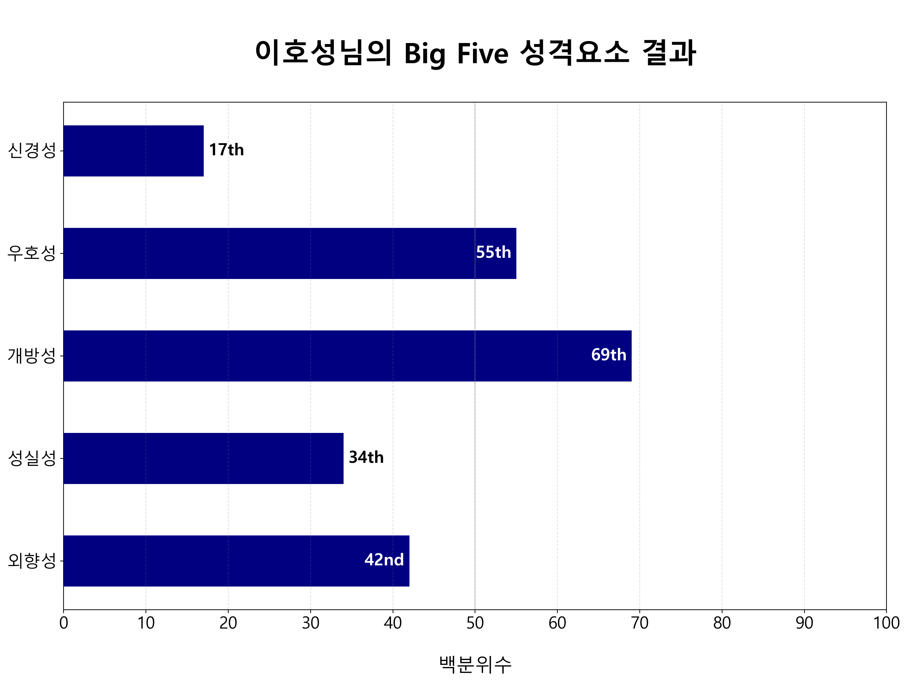

연인관계에 대한 71문항(MIMARA + ROCI-II) 설문을 완료하셨습니다.
저희는 mapper 알고리즘을 활용하여 95명, 71문항의 응답 데이터의 위상적 구조를 바탕으로
공통특징을 가진 4가지 유형을 발견하였고, 이를 SPAW 유형이라고 부르기로 했습니다.
응답자의 나이는 10대 후반에서 20대 초중반 (한국 대학생)에 분포하고 있으며,
응답자 성비는 남성:여성 = 1:1.26 으로 여성 응답자가 조금 더 많습니다.
또, 응답자 중에 다수와 확연한 위상적 차이를 보이는 아웃라이어와 응답 데이터가 유효하지 않은 불규칙적 응답자들을 분류했습니다.
SPAW 결과: 상대맞춤형
Pleaser Type
상대맞춤형의 가장 큰 특징은 연인에게 양보하고, 연인의 요구와 기대를 충족시키고자 하는 성향입니다. 상대맞춤형은 연인과 가깝게 지내는 것에 큰 불편감을 경험하지 않으며, 연인과 떨어져 지내도 감정이 상하지 않습니다. 갈등 상황에서 이들은 연인의 제안을 따르려는 성향이 모든 유형 중에 가장 높고, 자신의 의견을 굳게 내세우려는 성향이 가장 낮습니다. 그러나 갈등이 발생하면 이들은 절충안을 찾으려고 노력하며, 연인과 자신이 둘 다 수용할 수 있는 결정을 내리기 위해 협력하는 편입니다. 이들은 대체적으로 열린 태도로 갈등 해결에 임합니다. 상대맞춤형의 타인 지향적 태도는 연인을 잃는 것에 대한 두려움이나 질투에서 나오는 것 같지 않습니다.
상대맞춤형은 다른 유형에 비해 타협적이고 순종적이고, 우호적입니다. 전체 응답자 중에 36%를 차지하는 유형으로, 모든 유형을 통틀어 애정추구형과 함께 가장 큰 집단입니다. 응답자의 70%가 애정추구형 또는 상대맞춤형입니다. 대부분의 연인관계에는 높은 확률로 한쪽이 주고, 한쪽이 받는 일방적인 측면이 있을 것으로 추측됩니다. 상대맞춤형 내 남녀 비율은 거의 동일합니다.

위 그림은 위상데이터분석 알고리즘인 mapper의 결과로 주어진 simplicial complex를 시각화한 것입니다. 색칠된 것과 같이 유형을 나눴습니다.
애착 유형
MIMARA 응답 분석 결과
애착은 물리적 안전과 심리적 안정감을 제공하는 애착 대상을 구하고, 그 대상과 특정 거리를 유지하려는 행동 시스템입니다.
연인 관계에서는 연인이 서로의 애착 대상이 됩니다. 애착 시스템은 평상 시에는 비활성화되어 있지만, 다툼과 갈등 등의 스트레스 상황 속에 놓일 때 발동됩니다.
스트레스 상황에서 자신과 연인이 왜 특정 패턴으로 행동하는지 설명하는 데 활용할 수 있는 이론입니다.

불안형 애착: 낮음
이호성님의 불안형 애착 점수의 백분위수는 12로 나타났습니다.
100명의 사람이 모이면, 그 중 12명보다 불안형 애착 점수가 더 높고,
자신보다 불안 성향이 더 강한 사람은 88명임을 의미합니다.
불안형 애착 점수는 연인이 자신을 떠나는 것 혹은 자신을 인정해주지 않는 것에 대해 얼마나 걱정하는지 나타내는 지표입니다.
불안형 애착 점수가 높은 사람은 연인과의 감정적 거리를 줄임으로써 불안을 해소하고자 합니다.
불안 성향이 높은 사람은 자신을 부정적으로 보고 연인을 긍정적으로 보고 있을 가능성이 높습니다.
또, 불안형 애착 점수가 높을수록 연인이 자신을 떠나지 않는다는 믿음이 약하기 때문에 갈등상황에서 불안이 더 증가하는 악순환을 경험할 수 있습니다.
불안형 애착 점수가 매우 높은 사람들은 집착, 극심한 성적 끌림, 그리고 질투를 경험하곤 합니다.
회피형 애착: 조금 낮음
이호성님의 회피형 애착 점수의 백분위수는 41로 나타났습니다.
100명의 사람이 모이면, 그 중 41명보다 회피형 애착 점수가 더 높고,
자신보다 회피 성향이 더 강한 사람은 59명임을 의미합니다.
회피형 애착 점수는 자신이 연인과 가깝게 지내는 것에 대해 얼마나 불편감을 느끼는지 보여주는 지표입니다.
회피형 애착 점수가 높은 사람은 연인을 부정적으로 보고, 자신을 긍정적으로 보는 성향이 있을 수 있습니다.
회피형 애착 점수가 매우 높은 사람은 연인과 감정적으로 친밀해지는 것이 가능하지 않다고 믿거나 원하지 않는 경우가 많습니다.
이런 믿음은 연인 간 거리두기 행동으로 이어지게 되어 부정적인 생각과 감정을 회피할 수 있게 도와줍니다.
하지만 역설적이게도 회피형 애착 점수가 높은 사람들은 그렇지 않은 사람들보다 유의미하게 많은 부정적인 감정을 경험하는 것으로 알려져 있습니다.
반면에 회피형 애착 점수가 낮은 사람은 상호 의존하는 친밀한 관계를 편안하게 여깁니다.
불안형 애착과 회피형 애착 점수가 낮은 사람일수록 더 높은 관계 만족도를 경험하는 것으로 보고됩니다. 두 점수 모두 낮은 경우를 안정형 애착이라고 부릅니다. 안정형 애착 성향이 높을수록 연인을 더 신뢰하며, 연인에게 의지할 수 있다고 느끼며, 연인을 예측 가능한 대상으로 바라봅니다. 또, 안정형 애착을 가진 사람은 연인의 단점을 수용하는 데 어려움이 적습니다.
갈등 해결 유형
ROCI-II 응답 분석 결과
갈등 해결은 연인관계의 불가피한 요소일 뿐만 아니라 장기적인 관계 만족도와 가장 강력하게 연관되어 있는 변수로 알려져 있습니다. 갈등을 해결하려는 시도는 연인끼리 협력적으로 의사소통에 참여하여 서로를 이해할 수 있는 좋은 기회입니다. 반대로, 미흡한 갈등 해결은 커플 상담에서 가장 자주 등장하는 문제이기도 합니다. 그래서 성공적인 갈등 해결이 성공적인 관계를 만든다고 볼 수 있습니다.
이호성님의 갈등 해결 유형별 결과는 다음과 같습니다.

절충형: 중간
절충형은 통합형과 달리 서로 조금씩 포기하며 절충점에 도달하는 방식으로 갈등을 해결하려는 유형입니다.
순종형: 조금 낮음
순종형은 갈등 시 상대방의 요구를 들어주고, 상대의 기대를 충족시키기 위해 양보하는 방식으로 갈등을 해결하려는 유형입니다.
지배형: 낮음
지배형은 갈등에 대한 자신의 해결책을 주장하고, 힘이나 권위를 이용하여 자신에게 유리한 결정을 내리도록 갈등을 “지배”하는 유형입니다.
회피형: 조금 낮음
회피형은 불쾌감과 악감정을 방지하기 위해 자신의 생각을 꺼내지 않으면서 갈등을 회피하는 유형입니다.
통합형: 조금 높음
통합형은 자신과 상대의 입장을 모두 중요하게 여기는 갈등 해결 유형입니다. 연인과 협력적인 태도를 보이며, 자신의 감정을 솔직하게 소통하고, 동의할 수 있는 영역을 찾고, 양쪽의 입장을 통합하고, 서로에게 공감하며 갈등에서 win-win할 수 있는 대안을 실천합니다. 서로에게 경청하며 자신의 입장을 솔직하게 전달하는 것은 관계의 성장과 상호 이해를 도와줍니다.
Big Five 성격요소
연인관계 상황에서의 Big Five 성격요소
설문 문항을 재분류하여 연인관계 상황에서의 big five 성격 특징들을 보여주는 점수 합산 방식을 개발했습니다. Big five 성격요소에 근거한 재분류의 유효성은 Cronbach’s alpha test를 통해 검증되었습니다. 정식 big five 성격검사와 다른 방식으로 도출된 결과임을 밝힙니다.
이호성님의 big five 성격요소별 결과는 다음과 같습니다.

신경성: 낮음
신경성은 연인과의 갈등에서 철회하고, 연인 혹은 관계에 대한 좌절감과 실망감을 경험하는 정도를 나타냅니다.
우호성: 중간
우호성은 연인의 욕구와 감정을 고려하고, 공감적으로 행동하려는 성향으로 나타냅니다.
개방성: 조금 높음
개방성은 솔직하고 열린 소통을 하는 정도, 그리고 갈등을 해결하기 위해 새로운 방법들을 창의적으로 모색하려는 성향을 보여줍니다.
성실성: 조금 낮음
성실성은 관계를 위해 시간과 노력을 투자하고, 의지할 만한 연인이 되어주고자 하는 성향으로 정의했습니다.
외향성: 조금 낮음
외향성은 연인과 소통하고자 하는 성향과 자신의 생각을 굳게 내세우는 성향을 나타냅니다.
분석 방법 요약
본 검사는 위상 데이터 분석과 통계적 분석기법을 활용하여 진행되었습니다. Mapper의 필터함수는 PCA (성분 2개), clustering 함수는 DBSCAN을 활용했습니다. 통계적 검정은 정규성 검정(Shapiro Test), 왜도 검정(Skewness Test), 설문 일관성 분석(Cronbach’s Alpha Test), 집단 평균 비교(Bartlett’s test, Student/Welch t-test)를 진행했습니다. 표본이 가정을 만족함을 확인한 후, 통계적으로 유의미한 결과를 보고합니다.
참고자료
- Kim Bartholomew. Avoidance of intimacy: An attachment perspective. Journal of Social and Personal relationships, 7(2):147–178, 1990. 2.2
- Thomas N Bradbury and Benjamin R Karney. Understanding and altering the longitudinal course of intimate partnerships. Social Policy Journal of New Zealand, 23:1–30, 2004. 2.3
- John M Gottman. Predicting the longitudinal course of marriages. Journal of marital and Family Therapy, 17(1):3–7, 1991. 2.3
- Cindy Hazan and Phillip Shaver. Romantic love conceptualized as an attachment process. Journal of personality and social psychology, 52(3):511, 1987.2.2
- Frédéric Chazal and Bertrand Michel. An introduction to topological data analysis: fundamental and practical aspects for data scientists. Frontiers in artificial intelligence, 4:108, 2021.